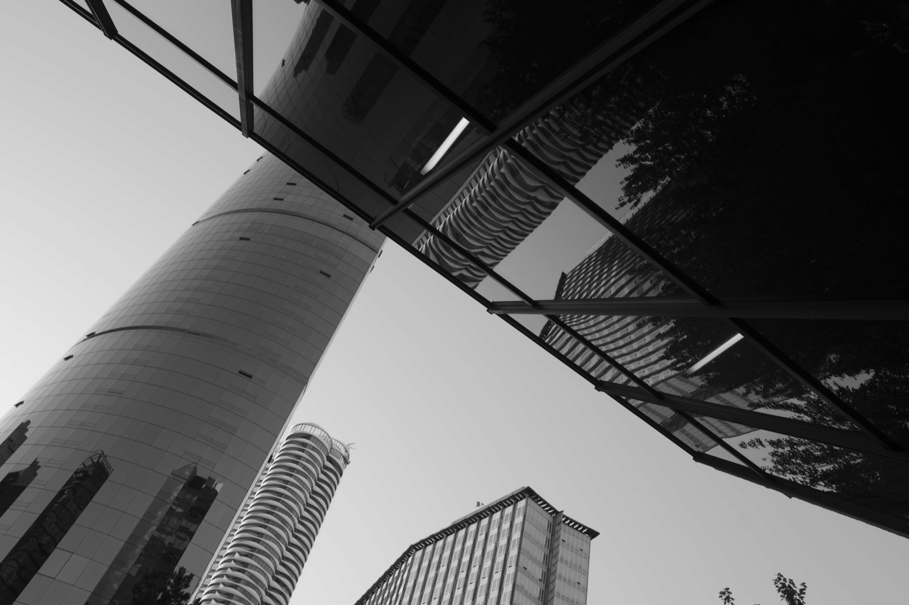

Architectural study
Reflected City
Looking upward through layered glass and steel, the city folds into itself: structure, reflection, and sky sharing one unsettled plane.
Back to camera canvas →
Architectural study
Looking upward through layered glass and steel, the city folds into itself: structure, reflection, and sky sharing one unsettled plane.
Back to camera canvas →